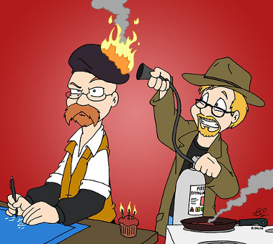

Взгляд на CQRS и Event Sourcing
Константин Титаренко
О чем поговорим?
- когда использовать Command/Query Responsibility Segregation, Event Sourcing (CQRS/ES)
- сравнение CQRS/ES с многослойной (N-Tier) архитектурой
- независимость от инфраструктуры
- тестируемость и надежность
- практика (код-код-код, с комментариями и демонстрацией)
Отвлечемся
и рассмотрим проблемы, с которыми сталкивался каждый разработчик
Сложность
и высокая связанность элементов модели

Зависимость
системы от инфраструктуры
Низкая
производительность системы
Нежелание
и сложность написания тестов
Дефекты
баги и последующие проблемы с релизами

Решение?
Поиск
серебряной пули корня зла причин

Фокус на хранении
домена, а не его поведении - проектирование

Фокус на фреймворках,
а не ядре системы - имплементация
Нарушение
признанных лучшими правил дизайна

Как выглядят
большинство наших систем

Как выглядит
взаимодействие с доменом
Стоп!
Готовы, набрали воздуха?
Как может выглядеть
взаимодействие с доменом

Как могут выглядеть
наши системы
Фокус на домене
а не на борьбе с инфраструктурой
Тесты больше не проблема
они просты в реализации и понятны заказчику

Масштабируемость
"из коробки" - основа производительности

Аудит
и анализ данных "из коробки"

Простота воспроизведения
исключительных ситуаций и последующей отладки
Простое распределение
задач для разработчиков разных уровней

Вы еще без CQRS/ES?
тогда мы идем к вам!

Демонстрация
примера - веб-приложения, моделирующего в первом приближении рынок (пользователи, магазины, товары, предложения, покупки, статистика)

Как это сделал
бы разработчик, используя "стандартный" подход?
Посмотрим,
как это сделано с применением CQRS/ES (исходный код доступен на Github)
Это только начало
несколько ссылок
выступление Грега Янга на NETWork 2011
Грег Янг о тестировании
сайт Рината Абдуллина
материалы по CQRS/ES
банально, Google
Надеюсь
было интересно, жду вопросов и благодарю за внимание!
обратная связь: моя веб-страничка
большинство используемых картинок найдены с помощью Google и используются здесь в некоммерческих целях, права на них принадлежат соответствующим правообладателям